GIG
Diseño de app móvil – 2020
Feel Factory es uno de los mercados más vanguardistas de Lisboa: arte urbano, restaurantes, cafeterías, librerías, espacios de coworking y galerías de arte ubicados en una vieja fábrica.
Esta antigua área industrial es un referente mundial en arquitectura y rehabilitación de antiguos edificios industriales. Su origen se remonta a 1846, cuando la empresa de hilos y telas "Companhia de Fiação e Tecidos Lisbonense" pasó a ocupar uno de los complejos industriales más importantes de la historia de Lisboa. Durante años, el complejo permaneció en el olvido, pero gracias a las nuevas generaciones de jóvenes artistas y diseñadores lisboetas, ha podido ser devuelto a la ciudad en forma de isla creativa.
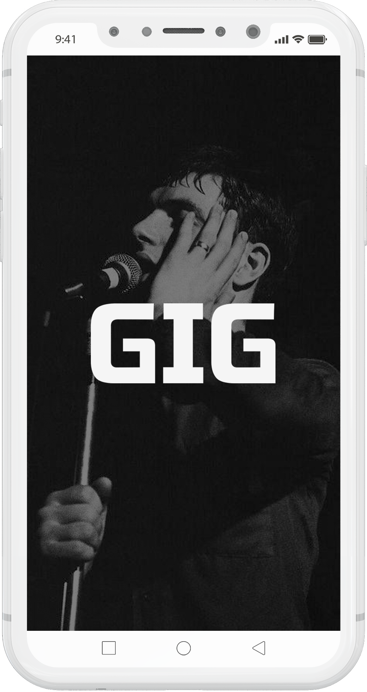
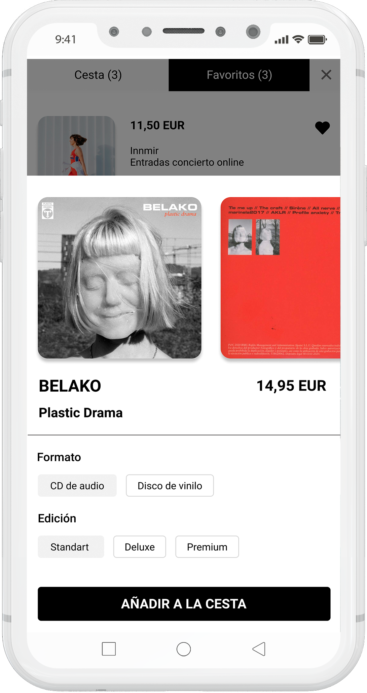
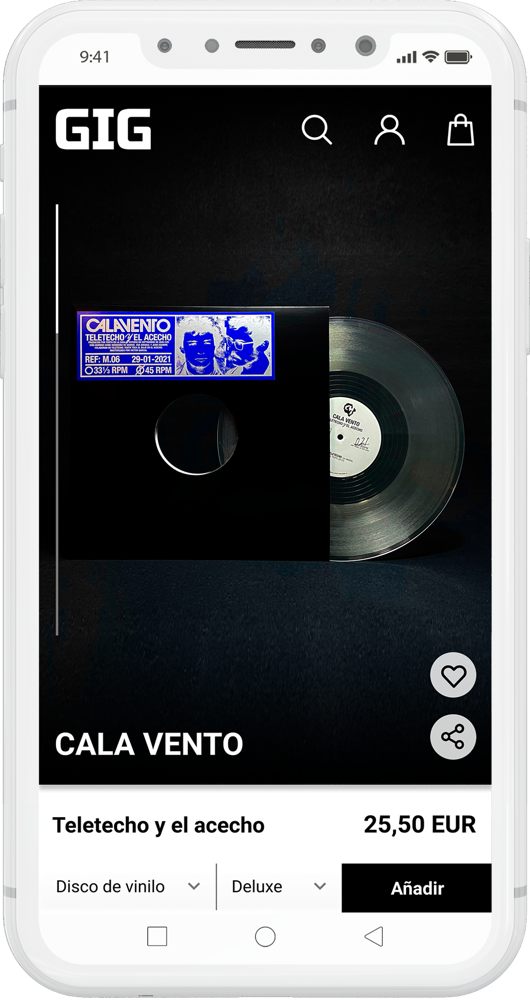
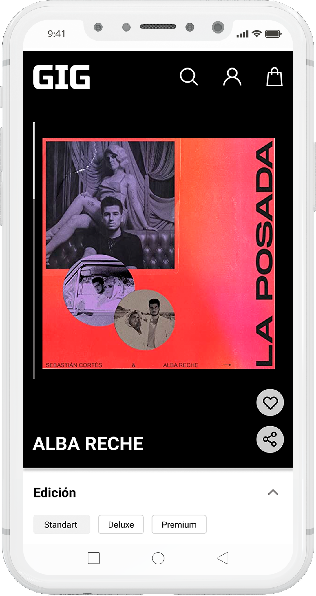
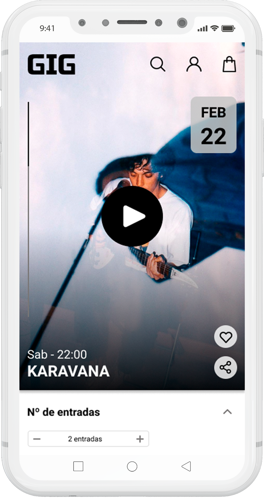
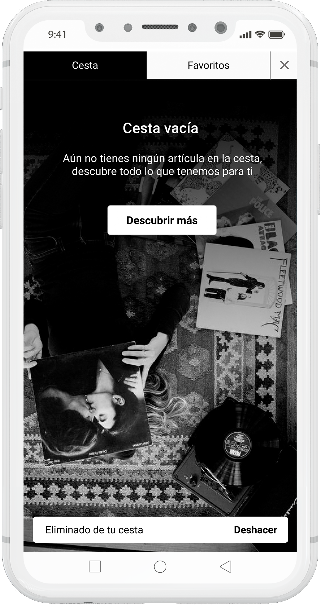
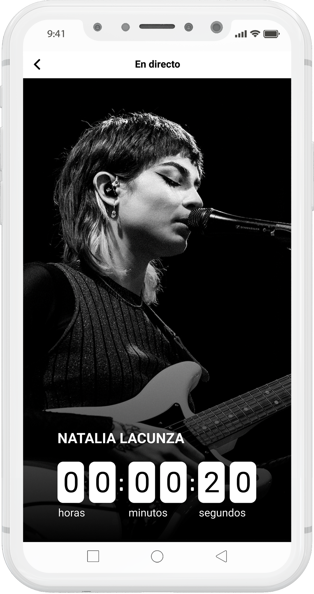
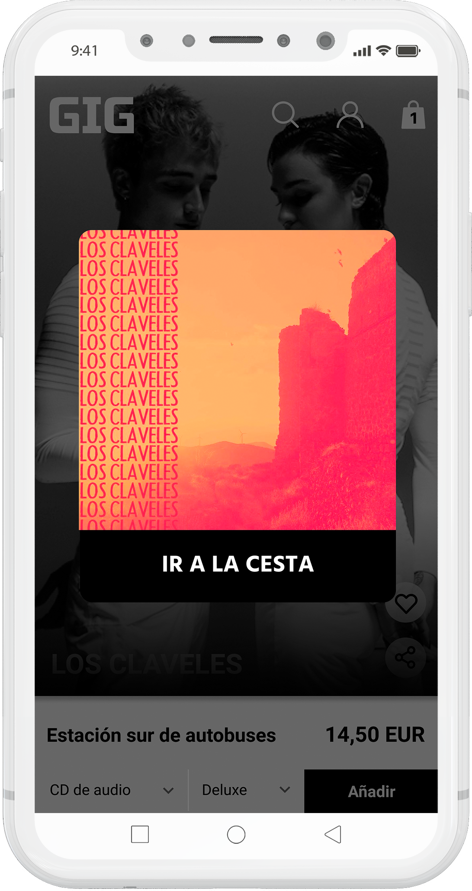
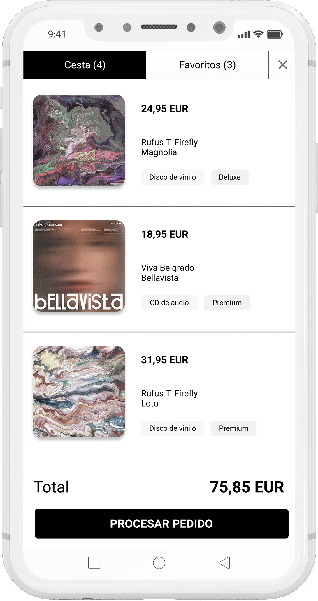
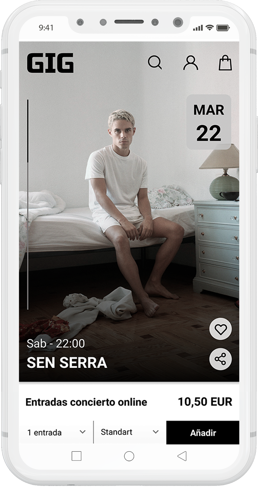
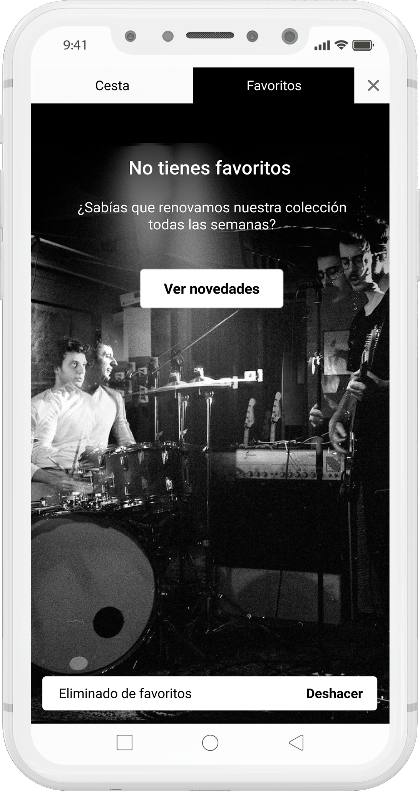
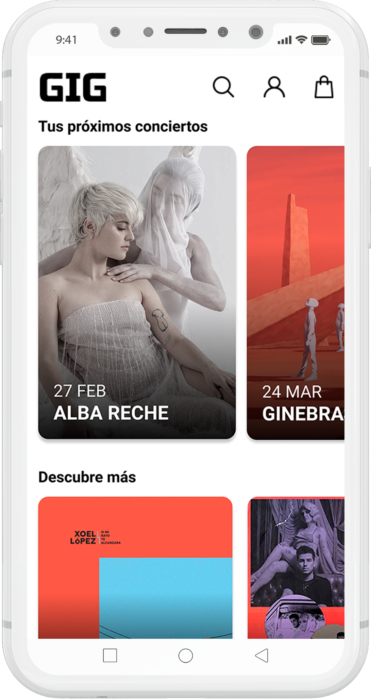
Descubre más proyectosde diseño gráfico y web